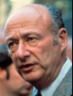

Party: Democrat
Bio: Incumbent mayor running on his record of fiscal recovery, balanced budgets, economic growth, and housing improvements.
Party: Liberal
Bio: Running on a platform to the left of Koch.
Party: Republican
Bio: Running as a moderate Republican.